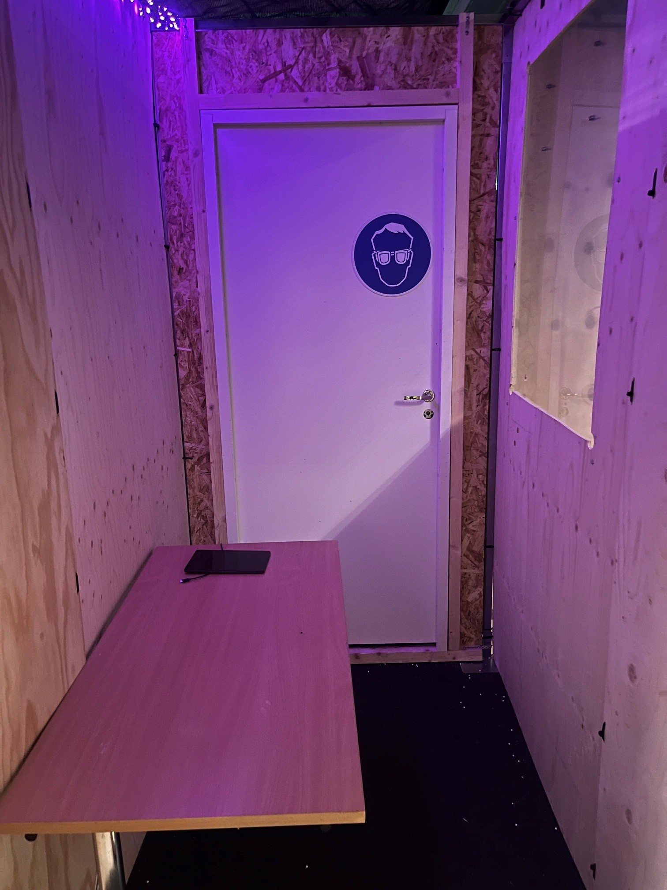
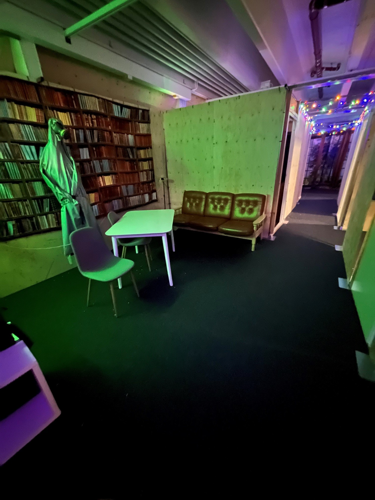
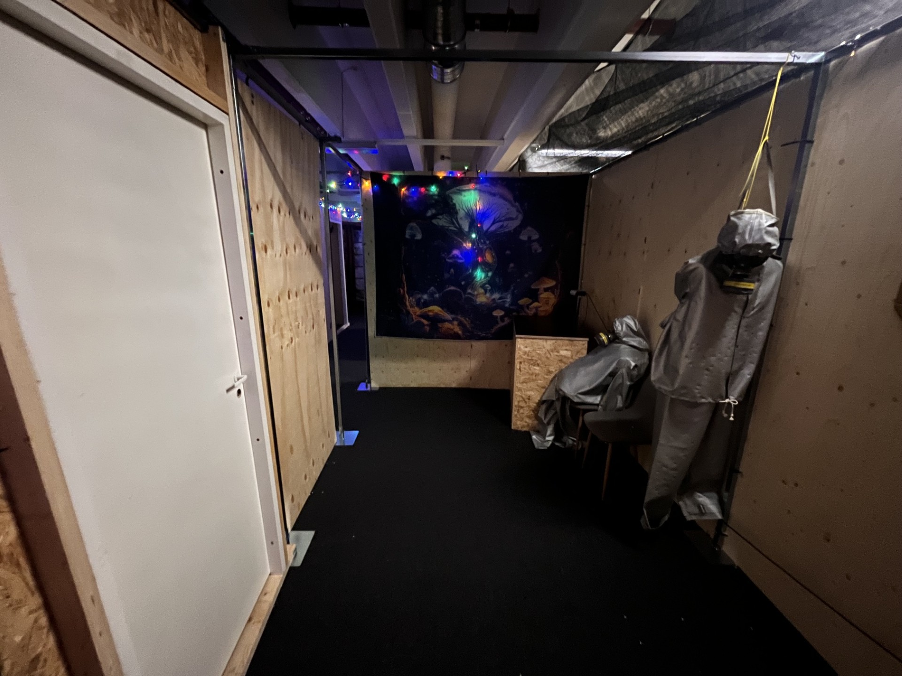
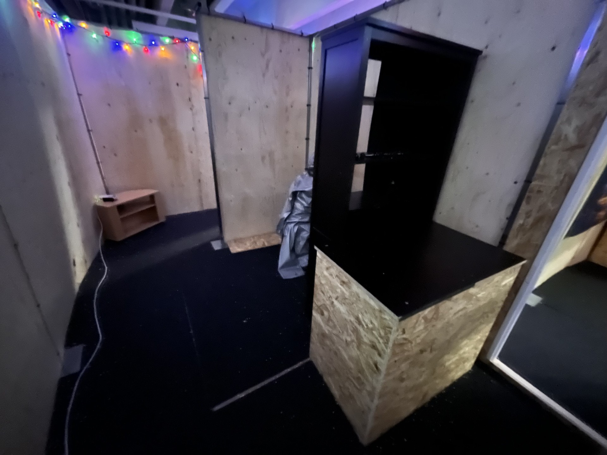
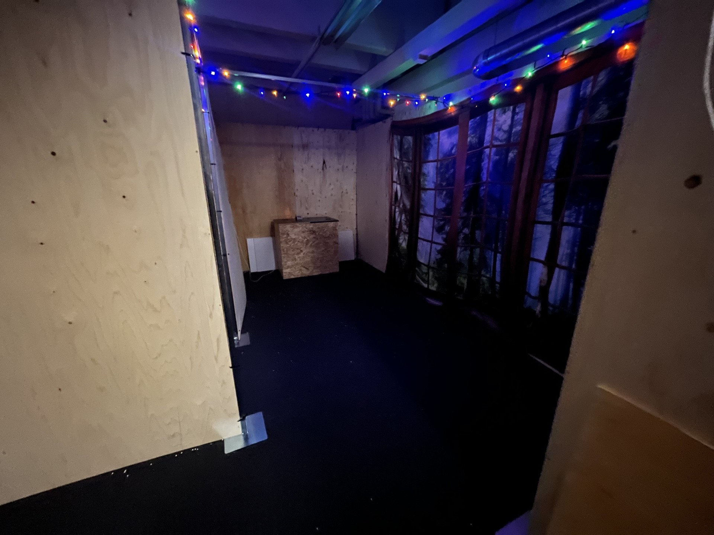

01
ALOITUS
Tutkinta alkaa
Asiakirjat, valokuvat ja ensimmäinen johtolanka.
LUOTTAMUKSELLINEN TUTKINTA-AINEISTO
Viiden huoneen pakohuone-elämys, jossa tarina, pulmat, tekniikka, ääni ja valaistus muodostavat yhden kokonaisuuden.
PROJEKTIN TAVOITE
Kivi on kadonnut ja hänen verkostonsa toimii edelleen. Pelaajilla on 60 minuuttia aikaa seurata johtolankoja viiden huoneen läpi ja pysäyttää uhka. Tämä verkkosivu esittelee tulevan fyysisen toteutuksen.
PELIN RAKENNE

ALOITUS
Asiakirjat, valokuvat ja ensimmäinen johtolanka.

SIJAINTI
Kartat ja koordinaatit johdattavat seuraavaan paikkaan.

EPÄILTY
Henkilömapit paljastavat yhden ristiriidan.

PALJASTUS
UV-valo paljastaa näkymättömät symbolit.

LOPPU
Viimeinen järjestelmä pitää sammuttaa ennen ajan loppua.
PELIN SISÄLTÖ
HUONE 01
Pelaajat tutkivat asiakirjoja, sanomalehtiä, valokuvia ja muistikirjaa. Päivämäärät, sivunumerot ja asiakirjojen yksityiskohdat muodostavat loogisen järjestyksen.
Tehtävä antaa pelaajille ensimmäisen suunnan ja avaa pääsyn seuraavaan tutkinta-aineistoon.
Rekvisiitta: asiakirjat, kansiot, valokuvat, muistikirja, pöytä, tietokone ja radiopuhelin.
HUONE 02
Pelaajat yhdistävät suuren seinäkartan, pienemmän kaupunkikartan, koordinaatit ja punaiset langat. Tehtävä perustuu havaintojen yhdistämiseen, ei yksittäisen numeron löytämiseen.
Oikea sijainti johdattaa seuraavaan huoneeseen ja kertoo, mitä henkilömappeja pitää tutkia.
Rekvisiitta: kartat, langat, kompassi, nastat, koordinaattilaput ja puulaatikko.
HUONE 03
Neljä henkilömappia sisältää kertomuksia, työvuoroja, puhelulokeja, valokuvia ja matkustustietoja. Pelaajien tulee verrata eri lähteitä toisiinsa.
Jokainen epäilty vaikuttaa aluksi epäilyttävältä, mutta vain yhden henkilön tiedoissa on ratkaiseva ristiriita.
Rekvisiitta: neljä henkilömappia, pöytä, suurennuslasit, valokuvaseinä ja puhelulokit.
HUONE 04
Hämärässä huoneessa pelaajat etsivät UV-valolla symboleita, nuolia ja lyhyitä viestejä. Löydöt pitää järjestää yhdeksi kokonaisuudeksi.
Tehtävä toimii visuaalisena huippukohtana: valaistus muuttuu, äänimaailma voimistuu ja seuraava sijainti varmistuu.
Rekvisiitta: turvallinen UV-lamppu, symbolikortit, kartta, taskulamput ja suojalasit.
HUONE 05
Pelaajat yhdistävät aikaisempien huoneiden tiedot ja käyttävät niitä viimeisessä ohjauspaneelissa. Näyttö näyttää ajan, järjestelmän tilan ja uhkan etenemisen.
Loppuratkaisun onnistuminen pysäyttää hälytyksen, vaihtaa valaistuksen ja aktivoi päätösviestin.
Rekvisiitta: näyttö, laskuri, näppäimistö, varoitusvalo, ohjauspaneeli ja lukittu laatikko.
REAALIMAAILMAN TOTEUTUS
HUONE 01 — FYYSINEN LUKITUS
Pelaajat ratkaisevat asiakirjatehtävän. Valmis tehtävä ei avaa ovea, vaan seuraavan materiaalin.
HUONE 02 — KARTTAMEKANISMI
Pelaajat asettavat karttapalat oikeille paikoille ja yhdistävät kohteet punaisilla langoilla.
HUONE 03 — HENKILÖMAPIT
Pelaajat löytävät oikean henkilön analysoimalla aineistoa ja asettavat mapin lukupisteeseen.
HUONE 04 — UV-TEHTÄVÄ
Pelaajat etsivät UV-merkinnät ja asettavat symbolikortit oikeaan järjestykseen. Fyysistä ovea ei lukita sähköllä.
HUONE 05 — LOPPUPANEELI
Pelaajat käyttävät aiempia vihjeitä viimeisessä ohjauspaneelissa, joka simuloi uhkan pysäyttämistä.
KESKUSJÄRJESTELMÄ
Kaikki huoneet yhdistetään keskitettyyn ohjausjärjestelmään, jota pelinohjaaja valvoo erilliseltä tietokoneelta tai tabletilta.
ÄÄNI, VALO JA VIRRANSYÖTTÖ
Raspberry Pi, USB-äänikortti, 2–4 aktiivikaiutinta, pieni vahvistin, radiopuhelimen kaltainen kaiutin sekä WAV-tiedostoihin perustuvat ääniefektit. Äänet käynnistetään anturitapahtumista.
12 V RGB-LED-nauhat, PWM-himmennin, punainen varoitusvalo, sininen vahvistusvalo ja erillinen verkkovirrasta riippumaton hätävalaistus.
Mekaaniset numerolukot yksinkertaisiin tehtäviin, servolukot kevyisiin laatikoihin, RFID-lukijat tunnistukseen ja 12 V solenoidisalvat sähköisiin kaappeihin.
Reed-kytkimet kansiin ja oviin, Hall-anturit magneetteihin, NFC/RFID-lukijat kortteihin, painikkeet sekä rajakytkimet mekaanisten liikkeiden varmistamiseen.
Kaapelit sijoitetaan suojaputkiin ja merkitään molemmista päistä. Jokaiselle huoneelle tehdään oma sulakkeellinen virtaryhmä ja erillinen huoltopaneeli.
Jokainen anturi, lukko, kaiutin, valo ja ohituspainike testataan erikseen. Peli testataan kokonaan vähintään kolmella eri ryhmällä.
TURVALLISUUS
Pelaajia ei lukita oikeasti poistumisreitin taakse. Kaikki ovet on voitava avata heti ilman sähköä. Sähköisissä lukoissa käytetään pienjännitettä, sulakkeita ja suojattuja virtalähteitä. UV-tehtävässä käytetään vain matalatehoista UV-A-valoa. Jokaisessa huoneessa on hätävalaistus, paloturvallinen kulkureitti, keskeytyspainike ja pelinohjaajan manuaalinen ohitus.
HANKINTASUUNNITELMA
Hinnat ovat suuntaa-antavia Suomen verkkokauppahintoja. Lopullinen hinta riippuu huoneiden koosta, käytetyistä materiaaleista ja siitä, mitä koululta tai yhteistyökumppaneilta löytyy valmiiksi.
| Kategoria | Hankinta | Määrä | Arvio |
|---|---|---|---|
| Rakenteet | Kierrätetty vaneri, pahvi, maalit ja kiinnikkeet | 5 huonetta | 300 € |
| Rekvisiitta | Itse tulostetut asiakirjat, kartat, kansiot ja valokuvat | 1 kokonaisuus | 80 € |
| Mekaaniset lukot | Numerolukot, riippulukot, haspit ja vara-avaimet | 8 kpl | 90 € |
| Sähkölukot | Yksi servo- tai solenoidilukko tärkeimpään laatikkoon | 1–2 kpl | 90 € |
| Ohjaimet | Yksi Raspberry Pi ja kaksi ESP32-ohjainta | 3 kpl | 100 € |
| Anturit | Reed-kytkimet, painikkeet ja muutama Hall-anturi | 15 kpl | 45 € |
| RFID/NFC | Yksi lukija vain yhteen näyttävään tehtävään | 1 lukija | 35 € |
| Virtalähteet | 5 V/12 V virtalähteet, sulakkeet ja liittimet | 1 järjestelmä | 90 € |
| Valaistus | Edulliset RGB-LED-nauhat, työvalot ja varoitusvalo | 5 huonetta | 120 € |
| Äänitekniikka | Käytetyt tietokonekaiuttimet ja Raspberry Pi:n äänentoisto | 1 järjestelmä | 60 € |
| Näytöt | Yksi käytetty televisio ja vanhat tabletit | 1 + 2 kpl | 100 € |
| UV-tehtävä | UV-A-lamput, UV-kynät ja taskulamput | 1 kokonaisuus | 35 € |
| Turvallisuus | Hätävalaistus, ohituspainikkeet, ensiapu ja palosammutin | 1 kokonaisuus | 150 € |
| Kaapelointi | Johdot, suojaputket ja kaapelimerkinnät | 1 kokonaisuus | 80 € |
| Varaosat | Varasensorit, sulakkeet ja mekaaniset varaosat | 1 paketti | 80 € |
| Arvioitu kokonaishinta | 1 455 € | ||